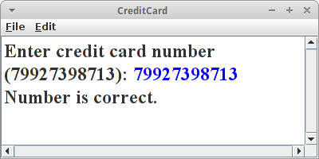
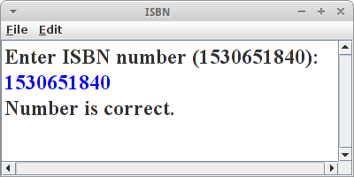

Introduction
Algorithmen sind überall. Algorithmen bestimmen unser tägliches Leben. Beim Zusammenbauen von IKEA Möbeln, beim Backen eines Kuchens oder beim Spielen mit Lego folgen wir einem Algorithmus. Hinter selbstfahrenden Autos, Gesichtserkennung und Fingerabdrucksensoren stecken Algorithmen. Die Verschlüsselung, die künstlichen Intelligenz und auch die moderne Genetik verwenden Algorithmen. Es gibt Algorithmen die sind sehr alt, es gibt Algorithmen die sind sehr schön. Algorithmen können trivial sein, aber es gibt auch sehr komplexe Algorithmen. Es gibt sogar Algorithmen die produzieren Kunst. Auf den folgenden Seiten wollen wir uns ein wenig mit der Welt der Algorithmen vertraut machen, und wir beginnen ganz einfach.
.
Introduction
Das Wort Algorithmus ist eigentlich die latinisierte Version des Nachnamens des persischen Mathematikers Abu Dscha'far Muhammad ibn Musa al-Chwarizmi (ca. 780 - ca. 850). Er ist u.a. verantwortlich für die Verbreitung des indischen Zahlensystems, einschließlich der Zahl Null. Er hat auch das Buch "Das kurzgefasste Buch über die Rechenverfahren durch Ergänzen und Ausgleichen" geschrieben, welches allgemein als Beginn der Algebra angesehen wird [3].
Laut Wikipedia ist ein Algorithmus eine effektive Methode etwas innerhalb einer begrenzten Zeit und mit begrenztem Raum zu berechnen, das man in einer wohl definierten Sprache ausdrücken kann. Diese Sprache beschreibt wie man von einem Anfangszustand, mit einer begrenzte Anzahl von Schritten, über wohl-definierte Zwischenzustände, schließlich einen finalen Endzustand erreicht [2].
Schauen wir uns einfach mal ein paar Beispiele an.
.
Pi
Es gibt viele Arten die Kreiszahl Pi auszurechnen, aber die einfachste ist wahrscheinlich die grafische: Wir zeichnen einfach ein Quadrat, und darin einen Viertelkreis. Dann malen wir einfach zufällig Punkte, möglichst gleichmäßig. Wir zählen die Punkte die innerhalb des Viertelkreises liegen, also n_innerhalb = 18, und die Gesamtzahl der Punkte, also n_gesamt =28. Pi ist dann einfach
Pi = 4 * n_innerhalb / n_gesamt = 2.6
Das ist jetzt nicht sehr genau, grob stimmt das aber. Wenn wir nämlich ganz viele Punkte machen, und die Punkte auch wirklich zufällig verteilt sind, dann kommt da wirklich Pi raus.
.
 Longest Common Substring
Longest Common Substring
DNA-Analyse hört sich jetzt an wie wenn es etwas super-kompliziertes wäre. Teilweise ist es das natürlich auch, speziell bis zu dem Schritt wo man die Buchstaben, also die Reihenfolge der Aminosäuren, hat. Hat man die aber, dann ist es ganz einfach. Nehmen wir an Bart's DNA sieht so aus:
Bart = "GTTCCTAATA"
und die von Homer so
Homer = "CGATAATTGAGA".
Alles was man dann machen muss, um z.B. festzustellen ob Bart wirklich Homer's Sohn ist, die beiden DNA Sequenzen entlang der X- und Y-Achsen auf einem karierten Papier aufzutragen, und die Stellen an denen beide übereinstimmen, markiert man einfach mit einem Kreuzchen. Wenn man sich das dann ansieht findet man Kreuzchen die sich zu einer Diagonale verbinden. Je länger die Diagonelen, desto mehr Übereinstimmung zwischen den beiden DNAs [4].
.
Greatest Common Divisor (GCD)
Einer der ältesten Algorithmen der immer noch benutzt wird, stammt von Euclid [5]. Er beschreibt wie man den größten gemeinsamen Teiler zweier Zahlen findet. Die Anleitung wie man das macht, also der Algorithmus geht wie folgt:
- ziehe die kleinere Zahl von der größeren solange ab, bis es nicht mehr geht;
- ist die Zahl die übrig bleibt null sind wir fertig, die kleinere Zahl ist der größte gemeinsame Teiler;
- falls die Zahl nicht null ist, dann machen wir aus der übrig gebliebenen Zahl die kleine Zahl und aus der kleinen Zahl die große und beginnen von vorne.
Am besten probiert man das einfach mal mit einem Beispiel aus: nehmen wir an die große Zahl ist 299, und die kleine Zahl ist 115. Verkürzt ergeben sich dann folgende Schritte:
299 = 115*2 + 69 115 = 69*1 + 46 69 = 46*1 + 23 46 = 23*2 + 0
Das bedeutet, dass 23 der größte gemeinsame Teiler von 299 und 115 ist.
Der Algorithmus hört sich ausgeschrieben etwas kompliziert an, aber wenn man ihn in Java übersetzt, dann ist er verblüffend einfach:
private int gcd(int a, int b) {
while (b != 0) {
if (a > b)
a = a - b;
else
b = b - a;
}
return a;
}
Der Algorithmus lässt sich übrigens auch sehr schön visualisieren.
.
Counting People
Wohl noch älter als Euclid's Algorithmus ist das Zählen. Man sollte meinen das ist ja eigentlich eine ganz einfach Angelegenheit. Aber sobald es sich um größere Mengen handelt wird es schon etwas schwieriger: wie zählt man denn die Anzahl der Zuschauer in einem etwas größeren Fußballstadium?
Wir könnten die Leute zählen wie sie ins Stadium kommen, einen nach dem anderen. Oder wir könnten einfach durchzählen lassen, wobei das in einem Stadium nicht ganz so einfach ist. Wir könnten auch ein Foto machen, und dann könnte einer die Leute auf dem Foto zählen. Auf die Art und Weise würden wir die genaue Anzahl der Leute wissen, solange wir uns nicht verzählen. Interessant ist die Frage wie lange das dauert: Nehmen wir an wir haben 20000 Leute im Stadium, und das Zählen einer Person dauert eine Sekunde. Dann dauert es knapp sechs Stunden bis wir fertig sind! Bis wir also fertig mit dem Zählen sind, ist das Spiel schon vorbei.
Stellt sich die Frage, geht das auch schneller? Wir könnten das Zählen "parallelisiseren": wenn unser Stadium sechs Eingänge hätte, und wir würden an jedem Eingang zählen, dann würde es nur ein sechstel der Zeit in Anspruch nehmen. Wir wären also in einer Stunde fertig. Wenn wir 20000 Eingänge hätten, dann würde das Ganze nur eine Sekunde dauern!
Gibt es weitere Möglichkeiten Leute in einem Stadium zu zählen? Interessanterweise sehr viele. Vor allem wenn wir nur eine ungefähre Anzahl benötigen. Wir könnten z.B. durch den Stadiumsprecher bitten, dass die Leute deren Nachnahme mit 'A' losgeht aufstehen sollen. Die zählen wir dann und multiplizieren die Zahl mit 26. Schon 26 mal schneller. Wir könnten uns auch einen kleinen Teil des Stadiums suchen, von dem wir wissen wieviele Sitzplätze es dort gibt. Dann zählen wir wieviel Prozent der Sitzplätze dort besetzt sind. Wenn wir annehmen, dass im Schnitt die Leute gleichmässig verteilt sind, können wir damit ausrechnen wieviele Leute ungefähr im Stadium sind. Wir könnten auch alle Sitze weiß anmalen, und den Leuten beim Eintritt rote Mützen geben. Dann machen wir ein Foto und messen einfach wie rot das Bild ist. Je roter desto mehr Leute. Oder wir fragen jemanden der sich mit Menschenmassen auskennt und wenn der dann sagt, "Oh, ich denke das sind so 20000", dann wäre das auch eine Möglichkeit zu zählen, aber eben nur eine Schätzung.
Worauf wir hinaus wollen: Sehr häufig gibt es mehr als nur einen Weg ein Problem zu lösen. Dabei sind manche Wege schneller als andere, andere sind dafür wieder genauer. Wenn wir also nach einem Algorithmus suchen, dann müssen wir zunächst entscheiden was uns wichtig ist, damit wir dann den passenden Algorithmus wählen können.
.
GameOfLife
Das größte Genie des letzten Jahrhunderts, John von Neumann, versuchte eine hypothetische Maschine zu konstruieren, die Kopien von sich selbst anfertigen konnte. Dies gelang ihm auch, allerdings hatte das mathematische Modell seiner Maschine sehr komplizierte Regeln. Dem britischen Mathematiker John Horton Conway schaffte es anfang der 70er von Neumann's Ideen drastisch zu vereinfachen, heute bekannt unter dem Namen Conway's Game of Life [6].
Das Universum des Spiel des Lebens ist ein zweidimensionales Gitter aus quadratischen Zellen (GRects), von denen jede in einer von zwei möglichen Zuständen sein kann: lebend (schwarz) oder tot (weiß). Jede Zelle hat acht Nachbarn, und abhängig vom Zustand der Nachbarn entscheidet sich der eigene Zustand in der nächsten Runde nach folgenden Regeln:
- jede lebende Zelle mit weniger als zwei lebenden Nachbarn stirbt (Unter-Bevölkerung)
- jede lebende Zelle mit zwei oder drei lebenden Nachbarn lebt
- jede lebende Zelle mit mehr als drei lebenden Nachbarn stirbt (Über-Bevölkerung)
- jede tote Zelle mit genau drei lebenden Nachbarn wird eine lebende Zelle (Fortpflanzung)
Das Resultat dieser einfachen Regeln ist durchaus überraschend.
.
Review
In der Einführung haben wir uns ein paar einfache, teilweise sehr alte Algorithmen angesehen. Wir haben auch gesehen, dass es Algorithmen gibt die nützlich sind und andere die nur eine Spielerei sind. Es gibt Algorithmen die schnell sind, und es gibt welche die langsam sind. Es gibt genaue und ungenaue Algorithmen. Und meistens gibt es mehr als einen Algorithmus ein bestimmtes Problem zu lösen. Das Wichtigste was allerdings hoffentlich rüberkommt: Algorithms are fun!
.
Projekte
Algorithmen sind so alt wie die Menschheit. Im Prinzip sind es einfach Kochrezepte, und genau wie diese sind die meisten Algorithmen auch intuitiv. Womit wir uns manchmal etwas schwer tun, ist sie dem Computer beizubringen. Aber wie mit allem, Übung macht den Meister.
.
EuclidSimple
Wir beginnen mit der einfach Version, einem ConsoleProgram. Wir fragen den Nutzer nach zwei Zahlen,
int a = readInt("Enter width (e.g. 299): ");
int b = readInt("Enter height (e.g. 115): ");
println( gcd(a, b) );
und berechnen dann mit der Methode gcd() von oben den größten gemeinsamen Teiler.
.
EuclidGraphics
Als nächstes wollen wir den Euclidschen Algorithmus visualisieren. Dazu verwenden wir ein GraphicsProgram. Zunächst fragne wir wieder den Nutzer nach zwei Zahlen. Da es sich um ein GraphicsProgram handelt, verwenden wir die Klasse IODialog,
IODialog dialog = getDialog();
int w = dialog.readInt("Enter width (e.g. 299): ");
int h = dialog.readInt("Enter height (e.g. 115): ");
int x = gcd(w, h);
Mit dieser Klasse kann man auch Dinge ausgeben, z.B. mittels
dialog.println("GCD is:" + x);
Der Algorithmus selbst bleibt fast identisch
private int gcd(int a, int b) {
while (b != 0) {
if (a > b) {
a = a - b;
drawRect(a, 0, b, b);
} else {
b = b - a;
drawRect(0, b, a, a);
}
pause(1000);
}
return a;
}
Wir müssen lediglich noch die Methode drawRect() implementieren. Die zeichnet einfach ein GRect mit zufälliger Farbe an den vorgegebenen Koordinaten:
private void drawRect(int a, int b, int w, int h) {
GRect rect = new GRect(a, b, w, h);
rect.setFilled(true);
rect.setFillColor(rgen.nextColor());
add(rect);
}
Gar nicht so schwer.
.
Pi
Wie bereits angedeutet kann Pi einfach durch das Zeichnen von Punkten ermitteln. Das mag zwar nicht die schnellste Methode sein, sie lässt sich aber am einfachsten visualisieren. Wir schreiben ein GraphicsProgram mit drei Instanzvariablen:
private RandomGenerator rgen = RandomGenerator.getInstance(); private int totalPoints = 0; private int insidePoints = 0;
einen Zufallszahlengenerator, und zwei Zählern, einen für die Gesamtzahl der Punkte und einen für die Punkte die innerhalb des Viertelkreises liegen. In der run() Methode zeichnen wir dann jeweils einen Punkt, und berechnen nach jedem Mal Pi und geben es auf der Konsole aus:
while (true) {
drawRandomPoint();
double pi = 4.0 * insidePoints / totalPoints;
System.out.println( "Pi = " + pi );
}
Die drawRandomPoint() Methode macht auch nicht besonders viel:
private void drawRandomPoint() {
double x = rgen.nextDouble();
double y = rgen.nextDouble();
totalPoints++;
GRect point = new GRect(x*SIZE,SIZE-y*SIZE, 1,1);
if ( ( x*x+y*y ) < 1.0 ) {
insidePoints++;
point.setColor( Color.RED );
} else {
point.setColor( Color.BLUE );
}
add( point );
}
Wir holen uns zwei zufällige Werte, x und y, erhöhen unseren Punktezähler und generieren ein Punkt Objekt. Da es in der ACM Library keine Punkte gibt, nehmen wir einfach ein GRect, das eine Höhe und Breite von je eins hat. Geht auch. Der Trick ist, wie weiss ich ob ein Punkt nun innerhalb oder außerhalb des Viertelkreises ist? Falls wir das vergessen haben, schlagen wir das schnell in einem alten Mathebuch nach: Alle Punkte bei denen
( x*x + y*y ) < 1.0
die sind innerhalb des Kreises. Und die malen wir rot an, die anderen blau. Funktioniert ganz gut. Falls man mehr über Pi wissen möchte, kann man sich das Buch eines Kollegen kaufen [7].
.
Lehmer
Wie wir gerade gesehen haben können Zufallszahlen ganz praktisch sein. Auch letztes Semester haben wir schon häufiger einen Zufallszahlengenerator, den RandomGenerator, verwendet. Nur wie funktioniert der, wo kommen denn die Zufallszahlen her?
Wenn man Glück hat, kommen die aus der Natur. Ein Computer hat jetzt aber recht wenig mit Natur zu tun, und für einen Computer ist es überraschend schwer an gute Zufallszahlen heranzukommen. Aber Gott sei Dank gab es den Herrn Lehmer und der hat sich da was überlegt, den Lehmer Algorithmus [8]:
X_i+1 = ( a * X_i + c ) % m
dabei ist '%' unser Freund der Modulo Operator. Der Lehmer Algorithmus erzeugt Pseudo-Zufallszahlen zwischen 0 und m-1, die linear kongruent sind, also gleichmäßig verteilt. Die Konstanten a, c und m müssen zwei Bedingungen erfüllen
2 <= a < m und 0 <= c < m
z.B., a=13, c=1, und m=16. Das erste x, also x_0, kann beliebig sein, idealerweise aber auch kleiner als m. Man nennt dieses erste x auch das Seed.
Wenn wir den Algorithmus in Java übersetzen
int a = 13;
int c = 1;
int m = 16;
int x = 3;
for (int i = 0; i < 20; i++) {
print(x + ",");
x = (a * x + c) % m;
}
und mal ausprobieren, dann stellen wir etwas interessantes fest: die Zahlen wiederholen sich! Und zwar nach m Schritten. Das ist der Grund warum diese Zahlen auch Pseudo-Zufallszahlen nennt. Es stellt sich heraus, dass alle im Computer durch Algorithmen erzeugten Zufallszahlen immer Pseudo-Zufallszahlen sind.
Kann man da was machen? Nein. Aber durch geschickte Wahl der Konstanten a, c und m kann man das Ganze erträglich machen.
.
Randomness
Was ist denn ein geschickte Wahl für der Konstanten a, c und m? Man kann jetzt Mathematik studieren (durchaus empfohlen) oder man liest in schlauen Büchern nach [9]. Wenn man relativ gute Pseudo-Zufallszahlen auf einem 32 bit Computer erzeugen will, dann sind folgende gute Werte:
- wenn man für m eine Primzahl wählt, dann kann man c = 0 setzen;
- die Primzahl m sollte möglichst groß sein, und wir haben Glück: 2^31 - 1 ist eine Primzahl;
- und die Mathematiker erzählen uns, dass a = 7*7*7*7*7 = 16807 eine gute Wahl für a ist.
Diese Wahl nennt man auch den "Minimal Standard Random Number Generator".
Schauen wir mal ob er was taugt, also ob er gut genug ist. Es stellt sich nämlich heraus, dass unser Auge relativ gut erkennen kann ob etwas zufällig ist oder nicht. Es braucht nur ein klein bischen Unterstützung. Als erstes implementiern wir unseren Lehmer Algorithmus, oder genauer den "Minimal Standard Random Number Generator" in Java:
private long a = 7 * 7; // * 7 * 7 * 7; // use 7 or 7*7
private long m = 2147483647L;
private long x = System.currentTimeMillis();
public int nextInt() {
x = a * x % m;
return (int) x;
}
Für unsere Seed x verwenden wir einfach die Uhrzeit, damit bekommen wir jedes mal andere Zufallszahlen. Macht man echt so. Ist auch der Grund warum die NSA so einfach unsere Verschlüsselungen knacken kann.
Die Methode nextInt() erzeugt Zufallszahlen zwischen 1 und 2^31 (-2). Wir benötigen aber sehr häufig Zahlen zwischen 0 und einer Obergrenze n:
public int nextInt(int n) {
int z = nextInt();
return (int) (z % n);
}
und da ist er wieder unser Freund der Modulo Operator.
Kommen wir zum Auge. Dafür schreiben wir ein GraphicsProgram in dessen run() Methode wir ein paar zufällige Punkte malen:
for (int i = 0; i < 10000; i++) {
int x = nextInt(SIZE);
int y = nextInt(SIZE);
setPixel(x, y, Color.RED);
}
wobei setPixel() wieder wie oben beim Project Pi ein GRect mit einem Pixel Höhe und Breite malt.
Wenn wir uns das Resultat ansehen, und a auf den Wert 7*7 gesetzten haben, dann sehen wir rote Streifen! Unser Auge sagt uns, das sind keine guten Zufallszahlen. Wählen wir aber für a den Wert den uns die Mathematiker nahelegen, also 7*7*7*7*7, dann können wir keine Streifen mehr erkennen. Keine Streifen, oder irgendwelche Muster im Allgemeinen, sind ein Zeichen für einen guten Zufallszahlengenerator.
.
CreditCard
Wie weiss man ob man sich vertippt hat? Dafür gibt es Prüfsummen (checksum). Ein Beispiel ist der Luhn-Algorithmus, von dem deutsch-amerikanischen Informatiker Hans Peter Luhn [10], der z.B. bei Kreditkarten verwendet wird.
Eine Kreditkarte besteht aus 16 Zahlen. Dabei sind die ersten 15 die eigentliche Nummer, die letzte Zahl ist aber die sogenannte Prüfziffer. Wie funktioniert der Luhn-Algorithmus?
- Erst mal wird jede zweite Ziffer verdoppelt, beginnend bei der zweiten von rechts. wenn dieses Resultat größer als neun ist, wird neun abgezogen;
- dann werden alle Ziffern aufaddiert, also sowohl die nicht verdoppelten als auch die verdoppelten, wenn diese Summe modulo 10 die Null ergibt, ist alles in Ordnung.
Eine Implementierung in Java sieht wie folgt aus:
private boolean checkCreditCardNumber(String creditNumber) {
int sum = 0;
int len = creditNumber.length();
for (int i = 0; i < len; i++) {
int x = creditNumber.charAt(i) - '0'; // turn char in to int
int y = x * (2 - (i + len) % 2); // multiply by two every other
if (y > 9) {
y -= 9;
}
sum += y;
}
return sum % 10 == 0;
}
Es ist interessant zu sehen wie die Anforderung "die zweite Ziffer von rechts verdoppeln" umgesetzt wurde:
int y = x * (2 - (i + len) % 2);
Das muss man einfach mal auf Papier ausprobiern, und dann sieht man, dass das anscheinend funktioniert.
.
ISBN
Ähnlich wie bei Kreditkarten gibt es auch bei Büchern die Internationale Standardbuchnummer (ISBN) anhand der man Bücher eindeutig identifizieren kann [11]. Auch bei dieser Nummer gibt ist die letzte Ziffer eine Prüfziffer. Der Algorithmus ist sogar noch einfacher als bei den Kreditkarten:
- addiere jede Ziffer multipliziert mit ihrer Position;
- wenn das Resultat modulo 11 die Null ergibt stimmt die Nummer.
In Java wird daraus:
char[] arr = isbnNumber.toCharArray();
for (int i = 0; i < 9; i++) {
t = arr[i] - '0';
s += t * (i + 1);
}
Eine kleine Ausnahme gibt es: die Prüfziffer könnte eine 10 sein, dann macht man einfach ein 'X' daraus, also 111111112X:
if (arr[9] == 'X') {
s += 10 * 10;
} else {
t = arr[9] - '0';
s += t * 10;
}
if (s % 11 == 0) { ... }
.
Benford's Law
Gerade haben wir gesehen wie man feststellen kann ob in Kreditkarten- oder ISBN Nummern ein Fehler ist. Dafür verwendet man einen Algorithmus. Kann man aber auch in anderen Daten Fehler finden? Ein interessantes Beispiel dafür ist das Benfordsche Gesetz [12]. Eigentlich hat es zuerst ein Herr Newcomb entdeckt, und deswegen nennt man es auch manchmal Newcomb-Benford’s Law.
Es geht darum, dass es in empirischen Daten eine überraschende Regelmäßigkeit gibt mit der gewisse Ziffern auftreten, speziell die erste Ziffer. Naiv würde man erwarten, dass alle Ziffern gleich oft dran kommen, und für zufällig verteilte Daten ist das auch der Fall. Aber eben nicht für die meisten empirischen Daten. Die folgen nämlich sehr häufig der folgenden Verteilung:
'1' 30,1 % '2' 17,6 % '3' 12,5 % '4' 9,7 % '5' 7,9 % '6' 6,7 % '7' 5,8 % '8' 5,1 % '9' 4,6 %
(Quelle [12]). D.h. 30 Prozent aller Zahlen in einem empirischen Datensatz beginnen mit der Ziffer '1'. Steuerfahnder verwenden diese Gesetzmäßigkeit um Steuerbetrug aufzudecken, und auch Wahlbetrug ist schon auf diese Art und Weise entlarvt worden.
Im letzten Semester hatte wir schon einmal mit empirischen Daten zu tun und das waren Aktienkurse. Im Prinzip können wir die Klasse StockDataBase unverändert verwenden. Dann sind in der stockDB HashMap die ganzen Aktienkurse gespeichert. Die gehen wir dann einen nach dem anderen durch und zählen wie häufig sie mit einer bestimmten Ziffer beginnen. Das Zählen machen wir in dem Array counts.
public double[] analyze() {
double total = 0;
double[] counts = new double[10];
for (String stock : stockDB.keySet()) {
StockEntry ent = stockDB.get(stock);
List<Double> prices = ent.getPrices();
for (int i = 0; i < prices.size(); i++) {
double price = prices.get(i);
char c = String.valueOf(price).charAt(0);
if (Character.isDigit(c)) {
counts[c - '0']++;
total++;
}
}
}
return counts;
}
Danach sollten wir noch die Daten in Prozent umrechnen, damit wir sie mit dem Benfordsche Gesetz vergleichen können. Und interessanterweise scheinen auch Aktienkurse grob dem Benfordsche Gesetz zu folgen. Ob der Unterschied vielleicht auf Insider-Trading hindeutet?
Das Benfordsche Gesetz ist natürlich kein Algorithmus. Deswegen stellt sich natürlich die Frage gehört das in dieses Buch. Die Frage darf jeder für sich selbst beantworten. Auf den Webseiten zum Buch von Sedgewick und Wayne finden sich noch eine ganze Menge anderer Datensätze über die man ähnliche Analysen laufen lassen könnte [13].
.
Challenges
.
 Mandelbrot
Mandelbrot
Die Apfelmännchen sind nach dem französischen Mathematiker Benoît Mandelbrot benannt. Es handelt sich dabei um sogenannte Fraktale, aber die meisten Leute finden sie einfach nur hübsch [14].
Die mathematische Gleichung die hinter der Mandelbrot Menge liegt ist sehr einfach:
z_n+1 = z_n * z_n + c
dabei sind z und c komplexe Zahlen. Es handelt sich hier um eine Iteration, d.h. wenn wir z_n kennen, dann können wir z_n+1 ausrechnen. Die Anfangsbedingungen lauten, dass z_0 gleich null sein soll und c ist der Punkt in der komplexen Ebene für den die Farbe ausgerechnet werden soll. Also wenn wir in x- und y-Koordinaten denken, dann ist
c = x + i y
die Anfangsbedingung. Alles was noch nötig ist, ist das Abbruchkriterium, wann sollen wir mit der Iteration aufhören? Entweder wenn z*z >= 4 ist oder wenn die Anzahl der Iterationen größer als ein maximal Wert ist:
while ( (x*x + y*y < 4) && (iteration < max_iteration) ) {
...
iteration++;
}
Damit das Ganze dann hübsch aussieht, nehmen wir die Anzahl der Iterationen und kodieren sie in Farbe:
int color = RAINBOW_COLORS[iteration % RAINBOW_NR_OF_COLORS];
Dabei ist RAINBOW_COLORS ein Farbarray, das wir beliebig initialisieren können. Zu guter Letzt brauchen wir noch eine setPixel() Methode, die es in der ACM Graphics Bibliothek eigentlich gar nicht gibt. Wir behelfen uns damit, dass wir kleine GRects zeichnen:
private void setPixel(double x, double y, Color color) {
int i = (int) (((x - xMin) * WIDTH) / (xMax - xMin));
int j = (int) (((y - yMin) * HEIGHT) / (yMax - yMin));
GRect r = new GRect(1, 1);
r.setColor(color);
add(r, i, j);
}
Das ist nicht gerade die schnellst und effektivste Art, aber sie funktioniert.
.
RandomGenerator
Letztes Semester haben wir häufig die Klasse RandomGenerator der ACM Bibliothek benutzt. Inzwischen können wir diese Klasse selbst implementieren. Dazu benutzen wir einfach Lehmer's Algorithmus mit den Konstanten wie sie z.B. in Referenz [8] empfohlen werden:
public final class RandomGenerator {
private int seed = 1;
private static final int a = 16807; // = 7*7*7*7*7
private static final int m = 2147483647; // = 2^31 -1
private static final int q = 127773; // = m div a
private static final int r = 2836; // = m mod a
public RandomGenerator() {
}
/**
* @return a random number between 0 and 2147483647
*/
public int nextInt() {
seed = a * (seed % q) - r * (seed / q);
return seed;
}
/**
* sets the initial seed
*
* @param s
* a good idea is a changing value, such as the time, ideally it
* is a truely random number.
*/
public void setSeed(int s) {
if ((s < 1) || (s >= m)) {
throw new IllegalArgumentException("invalid seed");
}
seed = s;
}
}
Was jetzt noch zu tun bleibt sind die übrigen Methoden der RandomGenerator Klasse zu implementieren, z.B.:
- int nextInt(int n): gibt eine zufällige Ganzzahl zwischen 0 <= r < n zurück;
- int nextInt(int low, int high): gibt eine zufällige Ganzzahl zwischen low <= r < high zurück;
- boolean nextBoolean(): gibt einen zufällige Boolean mit einer 50/50 Wahrscheinlichkeit von true oder false zurück;
- double nextDouble(): gibt eine zufällige Gleitkommazahl zwischen 0 <= r < 1 zurück;
- double nextDouble(double low, double high): gibt eine zufällige Gleitkommazahl zwischen low <= r < high zurück;
- Color nextColor(): gibt eine zufällige Farbe zurück.
.
Research
Natürlich können wir in diesem Buch nur die Oberfläche streifen, aber es gibt einige Themen die man noch vertiefen könnte.
.
List of Algorithms
Um eine Vorstellung davon zu bekommen, wie viele Algorithmen es da draußen gibt, werfen wir einen Blick auf die Sammlung von Algorithmen, die in der Wikipedia gelistet werden [1].
.
Entscheidungsproblem
David Hilbert's Entscheidungsproblem und Alan Turing's Turing Machine sind zwei Themen über die wir mal recherchieren sollten.
.
Luhn vs ISBN
Wenn wir den Luhn Algorithmus mit dem ISBN Algorithmus vergleichen, stellt sich die Frage: Welcher ist besser? Welcher erkennt mehr Fehler, bzw. häufiger auftretende Fehler?
.
Fragen
-
Wer hat den ersten Algorithmus geschrieben?
-
Beschreiben Sie in Ihren eigenen Worten, wie der Größte Gemeinsame Teiler Algorithmus funktioniert.
-
Nennen Sie zwei der wichtigsten Errungenschaften von Muhammad ibn Musa al-Chwarizmi.
-
Was ist der Unterschied zwischen einer echten Zufallszahl und einer Pseudozufallszahl?
-
Wie kann man die Kreiszahl Pi mit zufälligen Zahlen berechnen?
-
Beschreiben Sie die grafische Version von Euclid's Algorithmus.
-
Wofür wird Lehmer's Algorithmus verwendet?
- Wie können Sie grafisch bestimmen, ob ein Zufallszahlengenerator schlecht ist?
.
Referenzen
Anbei finden sich die Referenzen zum ersten Kapitel.
[1] List of algorithms, en.wikipedia.org/wiki/List_of_algorithms
[2] Algorithm, en.wikipedia.org/wiki/Algorithm
[3] Muḥammad ibn Mūsā al-Khwārizmī, https://en.wikipedia.org/wiki/Muhammad_ibn_Musa_al-Khwarizmi
[4] Longest common substring problem, https://en.wikipedia.org/wiki/Longest_common_substring_problem
[5] Euclidean algorithm, https://en.wikipedia.org/wiki/Euclidean_algorithm
[6] Conways Spiel des Lebens, https://de.wikipedia.org/wiki/Conways_Spiel_des_Lebens
[7] Pi: Algorithmen, Computer, Arithmetik, Jörg Arndt, Christoph Haenel
[8] Lehmer random number generator, https://en.wikipedia.org/wiki/Lehmer_random_number_generator
[9] Generating Random Numbers in Data Structures and Algorithms, Bruno R. Preiss, http://www.brpreiss.com/books/opus5/html/page465.html#33557
[10] Luhn-Algorithmus, https://de.wikipedia.org/wiki/Luhn-Algorithmus
[11] International Standard Book Number, https://en.wikipedia.org/wiki/International_Standard_Book_Number#ISBN-10_check_digits
[12] Benfordsches Gesetz, https://de.wikipedia.org/wiki/Benfordsches_Gesetz
[13] Real-World Data Sets, Robert Sedgewick and Kevin Wayne, http://introcs.cs.princeton.edu/java/data/
[14] Mandelbrot-Menge, https://de.wikipedia.org/wiki/Mandelbrot-Menge
.